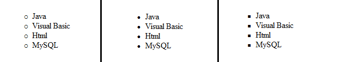

List
List item di gunakan untuk mengelompokkan data baik berurutan
(ordered list) maupun yang tidak berurutan (unordered list).
Contoh : Kita ingin mengelompokan data-data berikut ini :
Java, Visual Basic, Html, MySQL
Ordered List
Untuk membuat list terurut nomor (ordered list), kita gunakan tag
pembuka dan penutup , sedangkan untuk mendata setiap itemnya
menggunakan tag sebagai pembuka dan sebagai penutup.ol kependekan
dari Ordered List, li kependekan dari List Item.
Contoh :
Contoh di atas akan menghasilkan tampilan seperti berikut :
Atribut type pada tag <ol> :
| Type |
Arti |
| I |
Angka ditampilkan dengan angka romawi huruf besar |
| i |
Angka ditampilkan dengan angka romawi huruf kecil |
| A |
Angka ditampilkan dengan abjad huruf besar |
| a |
Angka ditampilkan dengan abjad huruf kecil |
Unordered List
Untuk membuat list tidak terurut nomor (Unordered List), kita gunakan tag
pembuka dan penutup , sedangkan untuk mendata setiap itemnya menggunakan
tag sebagai pembuka dan sebagai penutup.ul kependekan dari Unordered List,
li kependekan dari List Item.
Contoh :
Contoh di atas akan menghasilkan tampilan seperti berikut :

Atribut type pada tag <ul> :
| Type |
Arti |
| Circle |
Bullet Lingkaran |
| Disc |
Bullet Titik |
| Square |
Bullet Kotak |